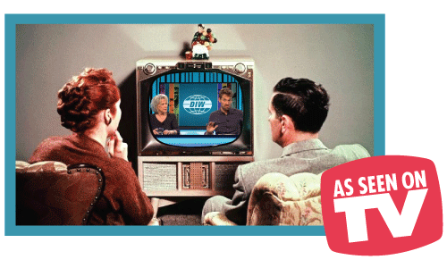

Omdat de actualiteit redelijk saai en droog kan zijn, maken wij bij de Ideale Wereld elke aflevering een samenvatting voor onze kijkers. We vinden het zeer belangrijk dat onze liever kijkers op de hoogte zijn van de belangrijke gebeurtenissen in de wereld.
Hier alvast een voorbeeldje.
We geven jou de kans om je plicht te vervullen en je vrienden en familie op je sociale media op de hoogte te houden van de actualiteit. Maak een leuke samenvatting van de actualiteit zoals op De Ideale Wereld en deel hem met je vrienden!
Via onze supermoderne videotool kan jij een samenvatting maken van de actualiteit.
